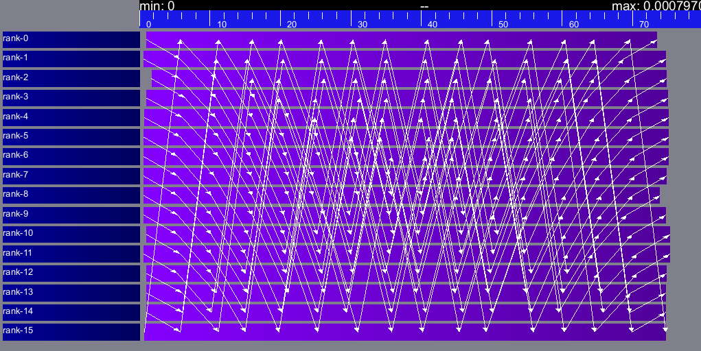
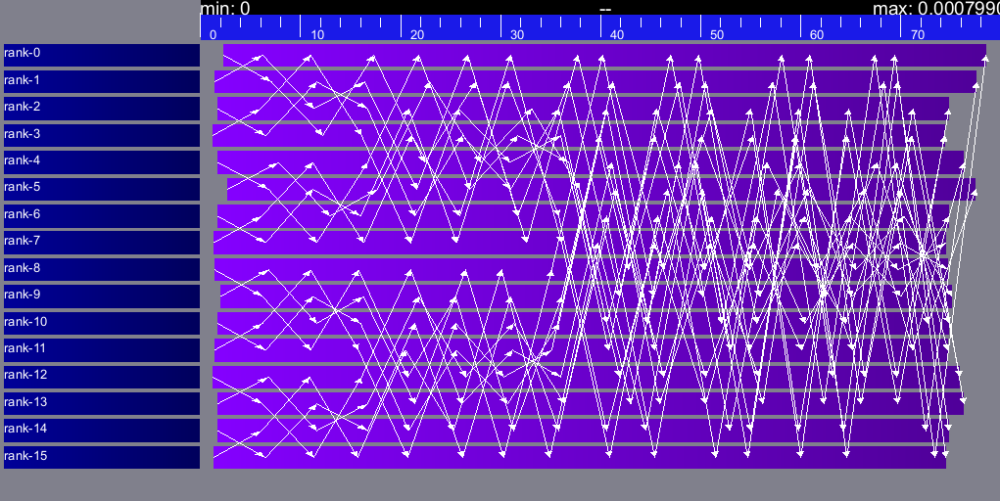

SMPI: Simulate MPI Applications
SMPI enables the study of MPI application by emulating them on top of the SimGrid simulator. This is particularly interesting to study existing MPI applications within the comfort of the simulator.
To get started with SMPI, you should head to the SMPI tutorial. You may also want to read the SMPI reference article or these introductory slides. If you are new to MPI, you should first take our online SMPI CourseWare. It consists in several projects that progressively introduce the MPI concepts. It proposes to use SimGrid and SMPI to run the experiments, but the learning objectives are centered on MPI itself.
Our goal is to enable the study of unmodified MPI applications. Some constructs and features are still missing, but we can probably add them on demand. If you already used MPI before, SMPI should sound very familiar to you: Use smpicc instead of mpicc, and smpirun instead of mpirun. The main difference is that smpirun takes a simulated platform as an extra parameter.
For further scalability, you may modify your code to speed up your studies or save memory space. Maximal simulation accuracy requires some specific care from you.
What can run within SMPI?
You can run unmodified MPI applications (both C/C++ and Fortran) within SMPI, provided that you only use MPI calls that we implemented. Global variables should be handled correctly on Linux systems.
MPI coverage of SMPI
SMPI support a large faction of the MPI interface: we pass many of the MPICH coverage tests, and many of the existing proxy apps run almost unmodified on top of SMPI. But our support is still incomplete, with I/O primitives the being one of the major missing feature.
The full list of functions that remain to be implemented is documented in the file include/smpi/smpi.h in your version of SimGrid, between two lines
containing the FIXME marker. If you miss a feature, please get in touch with us: we can guide you through the SimGrid
code to help you implementing it, and we’d be glad to integrate your contribution to the main project.
Privatization of global variables
Concerning the globals, the problem comes from the fact that usually, MPI processes run as real UNIX processes while they are all folded into threads of a unique system process in SMPI. Global variables are usually private to each MPI process while they become shared between the processes in SMPI. The problem and some potential solutions are discussed in this article: Automatic Handling of Global Variables for Multi-threaded MPI Programs <http://charm.cs.illinois.edu/newPapers/11-23/paper.pdf> (note that this article does not deal with SMPI but with a competing solution called AMPI that suffers of the same issue). This point used to be problematic in SimGrid, but the problem should now be handled automatically on Linux.
Older versions of SimGrid came with a script that automatically privatized the globals through static analysis of the source code. But our implementation was not robust enough to be used in production, so it was removed at some point. Currently, SMPI comes with two privatization mechanisms that you can select at runtime. The dlopen approach is used by default as it is much faster and still very robust. The mmap approach is an older approach that proves to be slower.
With the mmap approach, SMPI duplicates and dynamically switch the
.data and .bss segments of the ELF process when switching the
MPI ranks. This allows each ranks to have its own copy of the global
variables. No copy actually occurs as this mechanism uses mmap()
for efficiency. This mechanism is considered to be very robust on all
systems supporting mmap() (Linux and most BSDs). Its performance
is questionable since each context switch between MPI ranks induces
several syscalls to change the mmap that redirects the .data
and .bss segments to the copies of the new rank. The code will
also be copied several times in memory, inducing a slight increase of
memory occupation.
Another limitation is that SMPI only accounts for global variables defined in the executable. If the processes use external global variables from dynamic libraries, they won’t be switched correctly. The easiest way to solve this is to statically link against the library with these globals. This way, each MPI rank will get its own copy of these libraries. Of course you should never statically link against the SimGrid library itself.
With the dlopen approach, SMPI loads several copies of the same
executable in memory as if it were a library, so that the global
variables get naturally duplicated. It first requires the executable
to be compiled as a relocatable binary, which is less common for
programs than for libraries. But most distributions are now compiled
this way for security reason as it allows one to randomize the address
space layout. It should thus be safe to compile most (any?) program
this way. The second trick is that the dynamic linker refuses to link
the exact same file several times, be it a library or a relocatable
executable. It makes perfectly sense in the general case, but we need
to circumvent this rule of thumb in our case. To that extend, the
binary is copied in a temporary file before being re-linked against.
dlmopen() cannot be used as it only allows 256 contexts, and as it
would also duplicate SimGrid itself.
This approach greatly speeds up the context switching, down to about
40 CPU cycles with our raw contexts, instead of requesting several
syscalls with the mmap() approach. Another advantage is that it
permits one to run the SMPI contexts in parallel, which is obviously not
possible with the mmap() approach. It was tricky to implement, but
we are not aware of any flaws, so smpirun activates it by default.
In the future, it may be possible to further reduce the memory and disk consumption. It seems that we could punch holes in the files before dl-loading them to remove the code and constants, and mmap these area onto a unique copy. If done correctly, this would reduce the disk- and memory- usage to the bare minimum, and would also reduce the pressure on the CPU instruction cache. See the relevant bug on github for implementation leads.n
Also, currently, only the binary is copied and dlopen-ed for each MPI rank. We could probably extend this to external dependencies, but for now, any external dependencies must be statically linked into your application. As usual, SimGrid itself shall never be statically linked in your app. You don’t want to give a copy of SimGrid to each MPI rank: that’s ways too much for them to deal with.
Online SMPI: live execution
In this mode, your application is actually executed. Every computation occurs for real while every communication is simulated. In addition, the executions are automatically benchmarked so that their timings can be applied within the simulator.
SMPI can also go offline by replaying a trace. Trace replay is usually ways faster than online simulation (because the computation are skipped), but it can only applied to applications with constant execution and communication patterns (for the exact same reason).
Compiling your Code
If your application is in C, then simply use smpicc as a
compiler just like you use mpicc with other MPI implementations. This
script still calls your default compiler (gcc, clang, …) and adds
the right compilation flags along the way. If your application is in
C++, Fortran 77 or Fortran 90, use respectively smpicxx,
smpiff or smpif90.
If you use cmake, set the variables MPI_C_COMPILER, MPI_CXX_COMPILER and
MPI_Fortran_COMPILER to the full path of smpicc, smpicxx and smpiff (or
smpif90), respectively. Example:
$ cmake -DMPI_C_COMPILER=/opt/simgrid/bin/smpicc -DMPI_CXX_COMPILER=/opt/simgrid/bin/smpicxx -DMPI_Fortran_COMPILER=/opt/simgrid/bin/smpiff .
Simulating your Code
Use the smpirun script as follows:
$ smpirun -hostfile my_hostfile.txt -platform my_platform.xml ./program -blah
my_hostfile.txtis a classical MPI hostfile (that is, this file lists the machines on which the processes must be dispatched, one per line). Using thehostname:num_procssyntax will deploy num_procs MPI processes on the host, sharing available cores (equivalent to listing the same host num_procs times on different lines).my_platform.xmlis a classical SimGrid platform file. Of course, the hosts of the hostfile must exist in the provided platform../programis the MPI program to simulate, that you compiled withsmpicc-blahis a command-line parameter passed to this program.
smpirun accepts other parameters, such as -np if you don’t
want to use all the hosts defined in the hostfile, -map to display
on which host each rank gets mapped of -trace to activate the
tracing during the simulation. You can get the full list by running
smpirun -help
Finally, you can pass any valid SimGrid parameter to your
program. In particular, you can pass --cfg=network/model:ns-3 to
switch to use ns-3 as a SimGrid model. These parameters should be placed after
the name of your binary on the command line.
Debugging your Code within SMPI
If you want to explore the automatic platform and deployment files
that are generated by smpirun, add -keep-temps to the command
line.
You can also run your simulation within valgrind or gdb using the following commands. Once in GDB, each MPI ranks will be represented as a regular thread, and you can explore the state of each of them as usual.
$ smpirun -wrapper valgrind ...other args...
$ smpirun -wrapper "gdb --args" --cfg=contexts/factory:thread ...other args...
Some shortcuts are available:
-gdbis equivalent to-wrapper "gdb --args" -keep-temps, to run within gdb debugger-lldbis equivalent to-wrapper "lldb --" -keep-temps, to run within lldb debugger-vgdbis equivalent to-wrapper "valgrind --vgdb=yes --vgdb-error=0" -keep-temps, to run within valgrind and allow to attach a debugger
To help locate bottlenecks and largest allocations in the simulated application, the -analyze flag can be passed to smpirun. It will activate smpi/display-timing and smpi/display-allocs options and provide hints at the end of execution.
SMPI will also report MPI handle (Comm, Request, Op, Datatype…) leaks
at the end of execution. This can help identify memory leaks that can trigger
crashes and slowdowns.
By default it only displays the number of leaked items detected.
Option smpi/list-leaks:n can be used to display the
n first leaks encountered and their type. To get more information, running smpirun
with -wrapper "valgrind --leak-check=full --track-origins=yes" should show
the exact origin of leaked handles.
Known issue : MPI_Cancel may trigger internal leaks within SMPI.
Simulating Collective Operations
MPI collective operations are crucial to the performance of MPI applications and must be carefully optimized according to many parameters. Every existing implementation provides several algorithms for each collective operation, and selects by default the best suited one, depending on the sizes sent, the number of nodes, the communicator, or the communication library being used. These decisions are based on empirical results and theoretical complexity estimation, and are very different between MPI implementations. In most cases, the users can also manually tune the algorithm used for each collective operation.
SMPI can simulate the behavior of several MPI implementations: OpenMPI, MPICH, STAR-MPI, and MVAPICH2. For that, it provides 115 collective algorithms and several selector algorithms, that were collected directly in the source code of the targeted MPI implementations.
You can switch the automatic selector through the
smpi/coll-selector configuration item. Possible values:
ompi: default selection logic of OpenMPI (version 4.1.2)
mpich: default selection logic of MPICH (version 3.3b)
mvapich2: selection logic of MVAPICH2 (version 1.9) tuned on the Stampede cluster
impi: preliminary version of an Intel MPI selector (version 4.1.3, also tuned for the Stampede cluster). Due the closed source nature of Intel MPI, some of the algorithms described in the documentation are not available, and are replaced by mvapich ones.
default: legacy algorithms used in the earlier days of SimGrid. Do not use for serious perform performance studies.
Todo
default should not even exist.
Available Algorithms
You can also pick the algorithm used for each collective with the
corresponding configuration item. For example, to use the pairwise
alltoall algorithm, one should add --cfg=smpi/alltoall:pair to the
line. This will override the selector (if any) for this algorithm. It
means that the selected algorithm will be used
Warning
Some collective may require specific conditions to be executed correctly (for instance having a communicator with a power of two number of nodes only), which are currently not enforced by SimGrid. Some crashes can be expected while trying these algorithms with unusual sizes/parameters
To retrieve the full list of implemented algorithms in your version of SimGrid, simply use smpirun --help-coll.
MPI_Alltoall
Most of these are best described in STAR-MPI’s white paper.
default: naive one, by default.
ompi: use openmpi selector for the alltoall operations.
mpich: use mpich selector for the alltoall operations.
mvapich2: use mvapich2 selector for the alltoall operations.
impi: use intel mpi selector for the alltoall operations.
automatic (experimental): use an automatic self-benchmarking algorithm.
bruck: Described by Bruck et. al. in this paper.
2dmesh: organizes the nodes as a two dimensional mesh, and perform allgather along the dimensions.
3dmesh: adds a third dimension to the previous algorithm.
rdb: recursive doubling``: extends the mesh to a nth dimension, each one containing two nodes.
pair: pairwise exchange, only works for power of 2 procs, size-1 steps, each process sends and receives from the same process at each step.
pair_light_barrier: same, with small barriers between steps to avoid contention.
pair_mpi_barrier: same, with MPI_Barrier used.
pair_one_barrier: only one barrier at the beginning.
ring: size-1 steps, at each step a process send to process (n+i)%size, and receives from (n-i)%size.
ring_light_barrier: same, with small barriers between some phases to avoid contention.
ring_mpi_barrier: same, with MPI_Barrier used.
ring_one_barrier: only one barrier at the beginning.
basic_linear: posts all receives and all sends, starts the communications, and waits for all communication to finish.
mvapich2_scatter_dest: isend/irecv with scattered destinations, posting only a few messages at the same time.
MPI_Alltoallv
default: naive one, by default.
ompi: use openmpi selector for the alltoallv operations.
mpich: use mpich selector for the alltoallv operations.
mvapich2: use mvapich2 selector for the alltoallv operations.
impi: use intel mpi selector for the alltoallv operations.
automatic (experimental): use an automatic self-benchmarking algorithm.
bruck: same as alltoall.
pair: same as alltoall.
pair_light_barrier: same as alltoall.
pair_mpi_barrier: same as alltoall.
pair_one_barrier: same as alltoall.
ring: same as alltoall.
ring_light_barrier: same as alltoall.
ring_mpi_barrier: same as alltoall.
ring_one_barrier: same as alltoall.
ompi_basic_linear: same as alltoall.
MPI_Gather
default: naive one, by default.
ompi: use openmpi selector for the gather operations.
mpich: use mpich selector for the gather operations.
mvapich2: use mvapich2 selector for the gather operations.
impi: use intel mpi selector for the gather operations.
automatic (experimental): use an automatic self-benchmarking algorithm which will iterate over all implemented versions and output the best.
ompi_basic_linear: basic linear algorithm from openmpi, each process sends to the root.
ompi_binomial: binomial tree algorithm.
ompi_linear_sync: same as basic linear, but with a synchronization at the beginning and message cut into two segments.
mvapich2_two_level: SMP-aware version from MVAPICH. Gather first intra-node (defaults to mpich’s gather), and then exchange with only one process/node. Use mvapich2 selector to change these to tuned algorithms for Stampede cluster.
MPI_Barrier
default: naive one, by default.
ompi: use openmpi selector for the barrier operations.
mpich: use mpich selector for the barrier operations.
mvapich2: use mvapich2 selector for the barrier operations.
impi: use intel mpi selector for the barrier operations.
automatic (experimental): use an automatic self-benchmarking algorithm.
ompi_basic_linear: all processes send to root.
ompi_two_procs: special case for two processes.
ompi_bruck: nsteps = sqrt(size), at each step, exchange data with rank-2^k and rank+2^k.
ompi_recursivedoubling: recursive doubling algorithm.
ompi_tree: recursive doubling type algorithm, with tree structure.
ompi_doublering: double ring algorithm.
mvapich2_pair: pairwise algorithm.
mpich_smp: barrier intra-node, then inter-node.
MPI_Scatter
default: naive one, by default.
ompi: use openmpi selector for the scatter operations.
mpich: use mpich selector for the scatter operations.
mvapich2: use mvapich2 selector for the scatter operations.
impi: use intel mpi selector for the scatter operations.
automatic (experimental): use an automatic self-benchmarking algorithm.
ompi_basic_linear: basic linear scatter.
ompi_linear_nb: linear scatter, non blocking sends.
ompi_binomial: binomial tree scatter.
mvapich2_two_level_direct: SMP aware algorithm, with an intra-node stage (default set to mpich selector), and then a basic linear inter node stage. Use mvapich2 selector to change these to tuned algorithms for Stampede cluster.
mvapich2_two_level_binomial: SMP aware algorithm, with an intra-node stage (default set to mpich selector), and then a binomial phase. Use mvapich2 selector to change these to tuned algorithms for Stampede cluster.
MPI_Reduce
default: naive one, by default.
ompi: use openmpi selector for the reduce operations.
mpich: use mpich selector for the reduce operations.
mvapich2: use mvapich2 selector for the reduce operations.
impi: use intel mpi selector for the reduce operations.
automatic (experimental): use an automatic self-benchmarking algorithm.
arrival_pattern_aware: root exchanges with the first process to arrive.
binomial: uses a binomial tree.
flat_tree: uses a flat tree.
NTSL: Non-topology-specific pipelined linear-bcast function.
0->1, 1->2 ,2->3, ….., ->last node: in a pipeline fashion, with segments of 8192 bytes.
scatter_gather: scatter then gather.
ompi_chain: openmpi reduce algorithms are built on the same basis, but the topology is generated differently for each flavor. chain = chain with spacing of size/2, and segment size of 64KB.
ompi_pipeline: same with pipeline (chain with spacing of 1), segment size depends on the communicator size and the message size.
ompi_binary: same with binary tree, segment size of 32KB.
ompi_in_order_binary: same with binary tree, enforcing order on the operations.
ompi_binomial: same with binomial algo (redundant with default binomial one in most cases).
ompi_basic_linear: basic algorithm, each process sends to root.
mvapich2_knomial: k-nomial algorithm. Default factor is 4 (mvapich2 selector adapts it through tuning).
mvapich2_two_level: SMP-aware reduce, with default set to mpich both for intra and inter communicators. Use mvapich2 selector to change these to tuned algorithms for Stampede cluster.
rab: Rabenseifner’s reduce algorithm.
MPI_Allreduce
default: naive one, by defautl.
ompi: use openmpi selector for the allreduce operations.
mpich: use mpich selector for the allreduce operations.
mvapich2: use mvapich2 selector for the allreduce operations.
impi: use intel mpi selector for the allreduce operations.
automatic (experimental): use an automatic self-benchmarking algorithm.
lr: logical ring reduce-scatter then logical ring allgather.
rab1: variations of the Rabenseifner algorithm: reduce_scatter then allgather.
rab2: variations of the Rabenseifner algorithm: alltoall then allgather.
rab_rsag: variation of the Rabenseifner algorithm: recursive doubling reduce_scatter then recursive doubling allgather.
rdb: recursive doubling.
smp_binomial: binomial tree with smp: binomial intra.
SMP reduce, inter reduce, inter broadcast then intra broadcast.
smp_binomial_pipeline: same with segment size = 4096 bytes.
smp_rdb: intra``: binomial allreduce, inter: Recursive doubling allreduce, intra``: binomial broadcast.
smp_rsag: intra: binomial allreduce, inter: reduce-scatter, inter:allgather, intra: binomial broadcast.
smp_rsag_lr: intra: binomial allreduce, inter: logical ring reduce-scatter, logical ring inter:allgather, intra: binomial broadcast.
smp_rsag_rab: intra: binomial allreduce, inter: rab reduce-scatter, rab inter:allgather, intra: binomial broadcast.
redbcast: reduce then broadcast, using default or tuned algorithms if specified.
ompi_ring_segmented: ring algorithm used by OpenMPI.
mvapich2_rs: rdb for small messages, reduce-scatter then allgather else.
mvapich2_two_level: SMP-aware algorithm, with mpich as intra algorithm, and rdb as inter (Change this behavior by using mvapich2 selector to use tuned values).
rab: default Rabenseifner implementation.
MPI_Reduce_scatter
default: naive one, by default.
ompi: use openmpi selector for the reduce_scatter operations.
mpich: use mpich selector for the reduce_scatter operations.
mvapich2: use mvapich2 selector for the reduce_scatter operations.
impi: use intel mpi selector for the reduce_scatter operations.
automatic (experimental): use an automatic self-benchmarking algorithm.
ompi_basic_recursivehalving: recursive halving version from OpenMPI.
ompi_ring: ring version from OpenMPI.
ompi_butterfly: butterfly version from OpenMPI.
mpich_pair: pairwise exchange version from MPICH.
mpich_rdb: recursive doubling version from MPICH.
mpich_noncomm: only works for power of 2 procs, recursive doubling for noncommutative ops.
MPI_Allgather
default: naive one, by default.
ompi: use openmpi selector for the allgather operations.
mpich: use mpich selector for the allgather operations.
mvapich2: use mvapich2 selector for the allgather operations.
impi: use intel mpi selector for the allgather operations.
automatic (experimental): use an automatic self-benchmarking algorithm.
2dmesh: see alltoall.
3dmesh: see alltoall.
bruck: Described by Bruck et.al. in <a href=”http://ieeexplore.ieee.org/xpl/articleDetails.jsp?arnumber=642949”> Efficient algorithms for all-to-all communications in multiport message-passing systems</a>.
GB: Gather - Broadcast (uses tuned version if specified).
loosely_lr: Logical Ring with grouping by core (hardcoded, default processes/node: 4).
NTSLR: Non Topology Specific Logical Ring.
NTSLR_NB: Non Topology Specific Logical Ring, Non Blocking operations.
pair: see alltoall.
rdb: see alltoall.
rhv: only power of 2 number of processes.
ring: see alltoall.
SMP_NTS: gather to root of each SMP, then every root of each SMP node. post INTER-SMP Sendrecv, then do INTRA-SMP Bcast for each receiving message, using logical ring algorithm (hardcoded, default processes/SMP: 8).
smp_simple: gather to root of each SMP, then every root of each SMP node post INTER-SMP Sendrecv, then do INTRA-SMP Bcast for each receiving message, using simple algorithm (hardcoded, default processes/SMP: 8).
spreading_simple: from node i, order of communications is i -> i + 1, i -> i + 2, …, i -> (i + p -1) % P.
ompi_neighborexchange: Neighbor Exchange algorithm for allgather. Described by Chen et.al. in Performance Evaluation of Allgather Algorithms on Terascale Linux Cluster with Fast Ethernet.
mvapich2_smp: SMP aware algorithm, performing intra-node gather, inter-node allgather with one process/node, and bcast intra-node
MPI_Allgatherv
default: naive one, by default.
ompi: use openmpi selector for the allgatherv operations.
mpich: use mpich selector for the allgatherv operations.
mvapich2: use mvapich2 selector for the allgatherv operations.
impi: use intel mpi selector for the allgatherv operations.
automatic (experimental): use an automatic self-benchmarking algorithm.
GB: Gatherv - Broadcast (uses tuned version if specified, but only for Bcast, gatherv is not tuned).
pair: see alltoall.
ring: see alltoall.
ompi_neighborexchange: see allgather.
ompi_bruck: see allgather.
mpich_rdb: recursive doubling algorithm from MPICH.
mpich_ring: ring algorithm from MPICh - performs differently from the one from STAR-MPI.
MPI_Bcast
default: naive one, by default.
ompi: use openmpi selector for the bcast operations.
mpich: use mpich selector for the bcast operations.
mvapich2: use mvapich2 selector for the bcast operations.
impi: use intel mpi selector for the bcast operations.
automatic (experimental): use an automatic self-benchmarking algorithm.
arrival_pattern_aware: root exchanges with the first process to arrive.
arrival_pattern_aware_wait: same with slight variation.
binomial_tree: binomial tree exchange.
flattree: flat tree exchange.
flattree_pipeline: flat tree exchange, message split into 8192 bytes pieces.
NTSB: Non-topology-specific pipelined binary tree with 8192 bytes pieces.
NTSL: Non-topology-specific pipelined linear with 8192 bytes pieces.
NTSL_Isend: Non-topology-specific pipelined linear with 8192 bytes pieces, asynchronous communications.
scatter_LR_allgather: scatter followed by logical ring allgather.
scatter_rdb_allgather: scatter followed by recursive doubling allgather.
arrival_scatter: arrival pattern aware scatter-allgather.
SMP_binary: binary tree algorithm with 8 cores/SMP.
SMP_binomial: binomial tree algorithm with 8 cores/SMP.
SMP_linear: linear algorithm with 8 cores/SMP.
ompi_split_bintree: binary tree algorithm from OpenMPI, with message split in 8192 bytes pieces.
ompi_pipeline: pipeline algorithm from OpenMPI, with message split in 128KB pieces.
mvapich2_inter_node: Inter node default mvapich worker.
mvapich2_intra_node: Intra node default mvapich worker.
mvapich2_knomial_intra_node: k-nomial intra node default mvapich worker. default factor is 4.
Automatic Evaluation
Warning
This is still very experimental.
An automatic version is available for each collective (or even as a selector). This specific version will loop over all other implemented algorithm for this particular collective, and apply them while benchmarking the time taken for each process. It will then output the quickest for each process, and the global quickest. This is still unstable, and a few algorithms which need specific number of nodes may crash.
Adding an algorithm
To add a new algorithm, one should check in the src/smpi/colls folder how other algorithms are coded. Using plain MPI code inside SimGrid can’t be done, so algorithms have to be changed to use smpi version of the calls instead (MPI_Send will become smpi_mpi_send). Some functions may have different signatures than their MPI counterpart, please check the other algorithms or contact us using the >SimGrid user mailing list, or on >Mattermost.
Example: adding a “pair” version of the Alltoall collective.
Implement it in a file called alltoall-pair.c in the src/smpi/colls folder. This file should include colls_private.hpp.
The name of the new algorithm function should be smpi_coll_tuned_alltoall_pair, with the same signature as MPI_Alltoall.
Once the adaptation to SMPI code is done, add a reference to the file (“src/smpi/colls/alltoall-pair.c”) in the SMPI_SRC part of the DefinePackages.cmake file inside buildtools/cmake, to allow the file to be built and distributed.
To register the new version of the algorithm, simply add a line to the corresponding macro in src/smpi/colls/cools.h ( add a “COLL_APPLY(action, COLL_ALLTOALL_SIG, pair)” to the COLL_ALLTOALLS macro ). The algorithm should now be compiled and be selected when using –cfg=smpi/alltoall:pair at runtime.
To add a test for the algorithm inside SimGrid’s test suite, juste add the new algorithm name in the ALLTOALL_COLL list found inside teshsuite/smpi/CMakeLists.txt . When running ctest, a test for the new algorithm should be generated and executed. If it does not pass, please check your code or contact us.
Please submit your patch for inclusion in SMPI, for example through a pull request on GitHub or directly per email.
Tracing of Internal Communications
By default, the collective operations are traced as a unique operation
because tracing all point-to-point communications composing them could
result in overloaded, hard to interpret traces. If you want to debug
and compare collective algorithms, you should set the
tracing/smpi/internals configuration item to 1 instead of 0.
Here are examples of two alltoall collective algorithms runs on 16 nodes, the first one with a ring algorithm, the second with a pairwise one.

Alltoall on 16 Nodes with the Ring Algorithm.

Alltoall on 16 Nodes with the Pairwise Algorithm.
Adapting your MPI code for further scalability
As detailed in the reference article, you may want to adapt your code to improve the simulation performance. But these tricks may seriously hinder the result quality (or even prevent the app to run) if used wrongly. We assume that if you want to simulate an HPC application, you know what you are doing. Don’t prove us wrong!
Reducing your memory footprint
If you get short on memory (the whole app is executed on a single node when simulated), you should have a look at the SMPI_SHARED_MALLOC and SMPI_SHARED_FREE macros. It allows one to share memory areas between processes: The purpose of these macro is that the same line malloc on each process will point to the exact same memory area. So if you have a malloc of 2M and you have 16 processes, this macro will change your memory consumption from 2M*16 to 2M only. Only one block for all processes.
If your program is ok with a block containing garbage value because all processes write and read to the same place without any kind of coordination, then this macro can dramatically shrink your memory consumption. For example, that will be very beneficial to a matrix multiplication code, as all blocks will be stored on the same area. Of course, the resulting computations will useless, but you can still study the application behavior this way.
Naturally, this won’t work if your code is data-dependent. For example, a Jacobi iterative computation depends on the result computed by the code to detect convergence conditions, so turning them into garbage by sharing the same memory area between processes does not seem very wise. You cannot use the SMPI_SHARED_MALLOC macro in this case, sorry.
This feature is demoed by the example file examples/smpi/NAS/dt.c
Toward Faster Simulations
If your application is too slow, try using SMPI_SAMPLE_LOCAL, SMPI_SAMPLE_GLOBAL and friends to indicate which computation loops can be sampled. Some of the loop iterations will be executed to measure their duration, and this duration will be used for the subsequent iterations. These samples are done per processor with SMPI_SAMPLE_LOCAL, and shared between all processors with SMPI_SAMPLE_GLOBAL. Of course, none of this will work if the execution time of your loop iteration are not stable. If some parameters have an incidence on the timing of a kernel, and if they are reused often (same kernel launched with a few different sizes during the run, for example), SMPI_SAMPLE_LOCAL_TAG and SMPI_SAMPLE_GLOBAL_TAG can be used, with a tag as last parameter, to differentiate between calls. The tag is a character chain crafted by the user, with a maximum size of 128, and should include what is necessary to group calls of a given size together.
This feature is demoed by the example file examples/smpi/NAS/ep.c
Ensuring Accurate Simulations
Out of the box, SimGrid may give you fairly accurate results, but there is a plenty of factors that could go wrong and make your results inaccurate or even plainly wrong. Actually, you can only get accurate results of a nicely built model, including both the system hardware and your application. Such models are hard to pass over and reuse in other settings, because elements that are not relevant to an application (say, the latency of point-to-point communications, collective operation implementation details or CPU-network interaction) may be irrelevant to another application. The dream of the perfect model, encompassing every aspects is only a chimera, as the only perfect model of the reality is the reality. If you go for simulation, then you have to ignore some irrelevant aspects of the reality, but which aspects are irrelevant is actually application-dependent…
The only way to assess whether your settings provide accurate results is to double-check these results. If possible, you should first run the same experiment in simulation and in real life, gathering as much information as you can. Try to understand the discrepancies in the results that you observe between both settings (visualization can be precious for that). Then, try to modify your model (of the platform, of the collective operations) to reduce the most preeminent differences.
If the discrepancies come from the computing time, try adapting the
smpi/host-speed: reduce it if your simulation runs faster than in
reality. If the error come from the communication, then you need to
fiddle with your platform file.
Be inventive in your modeling. Don’t be afraid if the names given by SimGrid does not match the real names: we got very good results by modeling multicore/GPU machines with a set of separate hosts interconnected with very fast networks (but don’t trust your model because it has the right names in the right place either).
Finally, you may want to check this article on the classical pitfalls in modeling distributed systems.
Examples of SMPI Usage
A small amount of examples can be found directly in the SimGrid archive, under examples/smpi. Some show how to simply run MPI code in SimGrid, how to use the tracing/replay mechanism or how to use plugins written in S4U to extend the simulator abilities.
Another source of examples lay in the SimGrid archive, under
teshsuite/smpi.
They are not in the examples directory because they probably don’t
constitute pedagogical examples. Instead, they are intended to stress
our implementation during the tests. Some of you may be interested
anyway.
But the best source of SMPI examples is certainly the proxy app external project. Proxy apps are scale models of real, massive HPC applications: each of them exhibits the same communication and computation patterns than the massive application that it stands for. But they last only a few thousands lines instead of some millions of lines. These proxy apps are usually provided for educational purpose, and also to ensure that the represented large HPC applications will correctly work with the next generation of runtimes and hardware. This project gathers proxy apps from different sources, along with the patches needed (if any) to run them on top of SMPI.
Offline SMPI: Trace Replay
Although SMPI is often used for online simulation, where the application is executed for real, you can also go for offline simulation through trace replay.
SimGrid uses time-independent traces, in which each actor is given a script of the actions to do sequentially. These trace files can actually be captured with the online version of SMPI, as follows:
$ smpirun -trace-ti --cfg=tracing/filename:LU.A.32 -np 32 -platform ../cluster_backbone.xml bin/lu.A.32
The produced trace is composed of a file LU.A.32 and a folder
LU.A.32_files. The file names don’t match with the MPI ranks, but
that’s expected.
To replay this with SMPI, you need to first compile the provided
smpi_replay.cpp file, that comes from
simgrid/examples/smpi/replay.
$ smpicxx ../replay.cpp -O3 -o ../smpi_replay
Afterward, you can replay your trace in SMPI as follows:
$ smpirun -np 32 -platform ../cluster_torus.xml -ext smpi_replay ../smpi_replay LU.A.32
All the outputs are gone, as the application is not really simulated here. Its trace is simply replayed. But if you visualize the live simulation and the replay, you will see that the behavior is unchanged. The simulation does not run much faster on this very example, but this becomes very interesting when your application is computationally hungry.
Mixing S4U and MPI simulation
Mixing both interfaces is very easy. This can be useful to easily implement a service in S4U that is provided by your infrastructure in some way, and test how your MPI application interacts with this service. Or you can use it to start more than one MPI application in your simulation, and study their interactions.
To that extend, it is possible to define a plugin and load it in your SMPI simulation, but that may not be the easiest approach for newcomers. It is probably easier to simply start your MPI application within a regular S4U program using SMPI_app_instance_register, as shown in the example below. Compile it as usual (with gcc or g++, not smpicc) and execute it directly (not with smpirun).
Warning
doxygenfunction: Cannot find function “template<class F> SMPI_app_instance_start” in doxygen xml output for project “simgrid” from directory: ../build/xml
-
void SMPI_app_instance_start(const char *name, std::function<void()> const &code, std::vector<simgrid::s4u::Host*> const &hosts)
Here is a simple example of use, which starts the function alltoall_mpi as a MPI instance on 4 hosts, along several
S4U actors doing a master/workers.
View examples/smpi/smpi_s4u_masterworker/masterworker_mailbox_smpi.cpp
View examples/smpi/smpi_s4u_masterworker/deployment_masterworker_mailbox_smpi.xml
Troubleshooting with SMPI
./configure or cmake refuse to use smpicc
If your configuration script (such as ./configure or cmake) reports that the compiler is not
functional or that you are cross-compiling, try to define the
SMPI_PRETEND_CC environment variable before running the
configuration.
$ SMPI_PRETEND_CC=1 ./configure # here come the configure parameters
$ make
Indeed, the programs compiled with smpicc cannot be executed
without smpirun (they are shared libraries and do weird things on
startup), while configure wants to test them directly. With
SMPI_PRETEND_CC smpicc does not compile as shared, and the SMPI
initialization stops and returns 0 before doing anything that would
fail without smpirun.
Warning
Make sure that SMPI_PRETEND_CC is only set when calling the configuration script but not during the actual execution, or any program compiled with smpicc will stop before starting.
./configure or cmake do not pick smpicc as a compiler
In addition to the previous answers, some projects also need to be explicitly told what compiler to use, as follows:
$ SMPI_PRETEND_CC=1 cmake CC=smpicc # here come the other configure parameters
$ make
Maybe your configure is using another variable, such as cc (in
lower case) or similar. Just check the logs.
error: unknown type name ‘useconds_t’
Try to add -D_GNU_SOURCE to your compilation line to get rid
of that error.
The reason is that SMPI provides its own version of usleep(3)
to override it and to block in the simulation world, not in the real
one. It needs the useconds_t type for that, which is declared
only if you declare _GNU_SOURCE before including
unistd.h. If your project includes that header file before
SMPI, then you need to ensure that you pass the right configuration
defines as advised above.